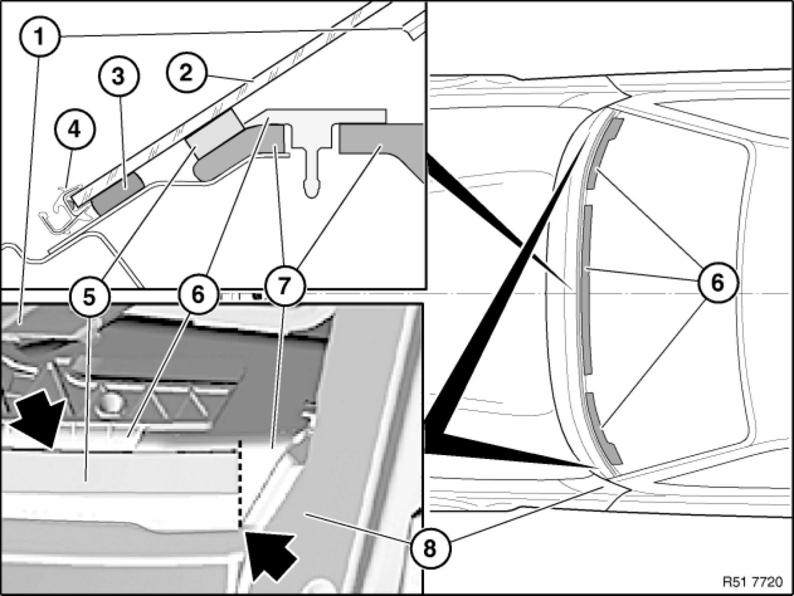

Cowl: Service and Repair
51 48 ... - Removing and installing/replacing sound insulation on cowl panel/windscreen

Note:
Sound insulation is only fitted in vehicles with diesel engines.
Sound insulation can only be replaced with the following removed:
- Instrument panel 51 45 030 Removing and Installing Instrument Panel Trim or
- Windscreen [1][2]51 31 000 Removing and Installing/Renewing Windscreen

Important!
Press down expanding foam tape (5) shortly before installing windscreen (2) (with hand roller) or stick on if replacing. Relaxed expanding foam tape could crush cement bead (3) (leaks, wind noises).
Replacement:
Stick new expanding foam tape (5) on sound insulation (7) along press-down elements (6).
Expanding foam tape (5) may only be stuck up to corner point of sound insulation (7).
1 - Dashboard trim panel
2 - Windscreen
3 - Adhesive bead
4 - Retaining strip, bottom
5 - Expanding foam tape (sound insulation, cowl panel)
6 - Press-down elements for (7)
7 - Sound insulation, bulkhead upper section
8 - Side frame